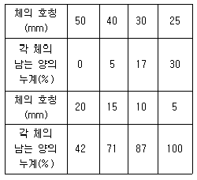
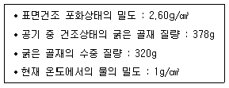
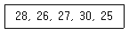
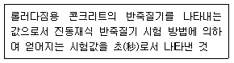
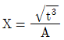
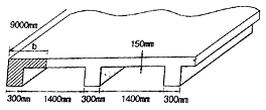
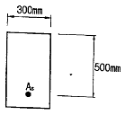
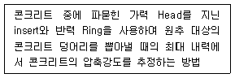
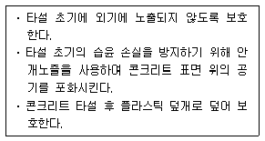
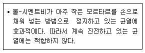

콘크리트기사 (2014-05-25 기출문제)
1과목: 재료 및 배합
1. 플라이 애시의 품질시험에 사용하는 시험모르타르의 배합 비율로서 올바른 것은? (단, 보통 포틀랜드시멘트 : 플라이 애시의 질량 비율)
- 3 : 1
- 2 : 1
- 1 : 2
- 1 : 3
(정답률: 87%)

2. 콘크리트용 혼화재료로 실리카 퓸을 사용한 콘크리트의 특성에 대한 설명으로 적당하지 않은 것은 무엇인가?
- 포졸란 반응으로 강도증진 효과가 뛰어나다.
- 마이크로 필러(micro filler)효과로 압축강도 발현성이 크다.
- 목표 슬럼프를 유지하기 위해 소요되는 단위수량이 크게 감소하여 강도증진 효과가 뛰어나다.
- 재료분리 저항성, 수밀성, 내화학약품성이 향상된다.
(정답률: 78%)
3. 강섬유보강콘크리트에 사용되는 강섬유에 관한 사항으로 올바르지 않은 것은?
- 강섬유 혼입률은 일반적으로 콘크리트 용적에 대한 백분율로 나타낸다.
- 강섬유의 혼입률은 일반적으로 0.5 ~ 2.0% 정도이다.
- 강섬유콘크리트의 압축강도는 강섬유의 혼입률에 따라 크게 좌우된다.
- 강섬유의 길이는 굵은골재 최대치수의 1.5배 이상으로 할 필요가 있다.
(정답률: 64%)
4. 콘크리트 내부에 미소의 공기를 연행하여 동결융해 저항성을 증가 시킬 목적으로 사용하는 계면활성제의 일종인 콘크리트 혼화제는 무엇인가?
- 감수제
- 급결제
- 유동화제
- AE제
(정답률: 92%)
5. 다음 중 콘크리트용 고로 슬래그 미분말의 품질평가 항목에 포함되지 않는 항목은 무엇인가?
- 밀도
- 비표면적
- 산화마그네슘(MgO)
- 이산화규소(SiO2)
(정답률: 33%)
6. 시멘트의 비중시험에 대한 설명으로 바르지 않은 것은?
- 달리 규정한 바가 없다면, 시멘트의 비중은 강열 감량 후의 시료에 대해서 실시하여야 한다.
- 온도 23±2℃에서 비중 약 0.73 이상인 완전히 탈수된 등유나 나프타를 사용한다.
- 광유가 든 비중병에 시멘트를 넣고 비중병을 물중탕 안에 넣어 광유 온도차가 0.2℃ 이내로 되었을 때의 눈금을 읽는다.
- 동일 시험자가 동일 재료에 대하여 2회 측정한 결과가 ±0.03이내이어야 한다.
(정답률: 64%)
7. 고로슬래그 미분말을 혼화재료로 사용한 콘크리트의 특성으로 올바른 것은?
- 슬래그 미분말 치환율이 클수록 미소세공이 많아지며 동결 가능한 세공용적수가 작아져 동결융해 저항성에 유리하다.
- 슬래그 미분말 치환율이 클수록 수산화칼숨량이 희석되므로 염류의 침투가 용이하다.
- 슬래그 미분말은 촉진성을 갖고 있으므로 콘크리트의 초기양생에 유리하다.
- 슬래그 미분말의 혼합률이 클수록, 분말도가 작을수록, 발열 속도는 빨라진다.
(정답률: 49%)
8. 굵은 골재의 체가름을 하여 다음 표와 같은 결과를 얻었다. 이 골재의 조립률은 얼마인가?

- 3.52
- 7.34
- 8.3
- 8.52
(정답률: 76%)
9. 골재의 체가름시험에 관한 설명으로 바르지 않은 것은?
- 모래나 자갈을 4분법 또는 시료분취기를 통해 대표시료를 채취한다.
- 채취한 시료는 1⑤±5℃에서 시료의 무게변화가 없을 때까지 건조시킨다.
- 1.2mm체에 질량비로 5%이상 남는 잔골재 시료의 최소 건조질량은 500g으로 한다.
- 굵은골재의 최대치수가 25mm정도인 시료의 최소 건조질량은 3kg으로 한다.
(정답률: 68%)
10. 고강도 콘크리트 배합에 관한 설명으로 바르지 않은 것은?
- 잔골재율은 가능한 작게 하도록 한다.
- 굵은골재의 입자가 큰 것을 사용한다.
- 고성능의 시멘트를 사용한다.
- 고성능 감수제를 사용한다.
(정답률: 55%)
11. 콘크리트 배합설계에 대한 설명으로 바르지 않은 것은?
- 단위수량은 소요 워커빌리티를 얻는 범위 내에서 가능한 작은 값으로 한다.
- 공기량을 크게 하면 동일한 슬럼프를 얻는데 필요한 단위수량을 줄일 수 있다.
- 콘크리트를 최대 치수가 큰 굵은 골재를 사용하는 것이 일반적으로 유리하다.
- 실적률이 작은 굵은 골재를 사용하면 동일 슬럼프를 얻는데 필요한 단위수량을 줄일 수 있다.
(정답률: 25%)
12. 다음 중 골재의 안정성 시험을 위해 사용하는 용액은 무엇인가?
- 수산화나트륨 포화용액
- 황산나트륨 포화용액
- 염화나트륨 포화용액
- 수산화칼슘 포화용액
(정답률: 66%)
13. 아래 표의 데이터에 의해 굵은 골재의 표면건조 포화상태 질량(g)은 얼마인가?

- 520g
- 550g
- 580g
- 610g
(정답률: 44%)
14. 일반콘크리트의 배합에서 물-결합재비에 대한 설명으로 바르지 않은 것은?
- 제빙화학제가 사용되는 콘크리트의 물-결합재비는 45% 이하로 한다.
- 콘크리트의 수밀성을 기준으로 물-결합재비를 정할 경우 그 값은 50%이하로 한다.
- 콘크리트의 탄산화 저항성을 고려하여 물-결합재비를 정할 경우 40%이하로 한다.
- 물에 노출되었을 때 낮은 투수성이 요구되는 콘크리트의 내동해성을 기준으로 하여 물-결합재비를 정할 경우 50%이하로 한다.
(정답률: 74%)
15. 콘크리트 시방배합 설계에서 단위골재의 절대용적이 0.678m3이고, 잔골재율이 40%, 굵은 골재의 표건밀도가 2.65g/cm3인 경우 단위 굵은 골재량으로 적당한 것은 무엇인가?
- 719kg
- 1078kg
- 1136kg
- 1462kg
(정답률: 57%)
16. 골재중에 점토, 실트, 운모질 등의 메시물질이 포함되어 있는 경우에 대한 설명으로 바르지 않은 것은?
- 골재의 표면에 밀착되어 있지 않고 균등하게 분포되어 있는 경우, 빈배합의 콘크리트에서 강도 및 방수성의 저하가 현저하다.
- 소요의 단위수량이 증가한다.
- 콘크리트 표면에 얇은 층을 만든다.
- 골재표면에 부착되어 있을 때는 골재와 시멘트 페이스트와의 부착이 나빠진다.
(정답률: 49%)
17. 시멘트 제조원료에 대한 설명으로 바르지 않은 것은?
- 세민트중의 MgO의 함유성분이 많으면 콘크리트 경화체에 균열을 일으킨다.
- 시멘트중의 알칼리 성분이 많으면 콘크리트 강도를 증가 시킨다.
- 포틀랜드 시멘트는 주로 석회질 원료 및 점토질 원료를 적당한 비율로 혼합하여 제조한다.
- 석고를 첨가하면 응결이 지연된다.
(정답률: 67%)
18. 잔골재량이 770kg/m3, 굵은골재량이 950kg/m3인 시방배합을, 잔골재 중의 5mm체 잔류율이 3%, 굵은골재 중의 5mm체 통과율이 5%인 현장에서 현장배합으로 고칠 경우 입도보정에 의한 잔골재량은 약 얼마인가?
- 707kg/m3
- 743kg/m3
- 795kg/m3
- 826kg/m3
(정답률: 42%)
19. 굵은 골재의 밀도 및 흡수율시험(KS F 2503)방법에서 시험값의 정밀도에 대한 설명으로 올바른 것은?
- 시험값은 평균값과의 차이가 밀도의 경우 0.1g/cm3이하, 흡수율의 경우는 0.03% 이하이어야 한다.
- 시험값은 평균값과의 차이가 밀도의 경우 0.1g/cm3이하, 흡수율의 경우는 0.3% 이하이어야 한다.
- 시험값은 평균값과의 차이가 밀도의 경우 0.01g/cm3이하, 흡수율의 경우는 0.03% 이하이어야 한다.
- 시험값은 평균값과의 차이가 밀도의 경우 0.01g/cm3이하, 흡수율의 경우는 0.3% 이하이어야 한다.
(정답률: 57%)
20. 15회의 압축강도 시험 실적으로부터 구한 압축강도의 표준편차가 5MPa이고 설계기준 압축강도(fck)가 40MPa인 경우 배합강도(fcr)를 구하면 얼마인가?
- 46.7MPa
- 47.8MPa
- 49.6MPa
- 50MPa
(정답률: 50%)
2과목: 제조, 시험 및 품질관리
21. 콘크리트의 반죽질기(워커빌리티) 측정 방법을 설명한 것으로 바르지 않은 것은?
- 다짐계수 시험은 워커빌리티의 역수에 부합된다.
- 리몰딩 시험과 VB시험은 워커빌리티에 비례한다.
- 리몰딩 시험은 낙하충격에 의해 측정한다.
- 다짐계수 시험은 실험실에서 주로 실시되며, 현장에서의 사용은 부적합하다.
(정답률: 58%)
22. 일반 콘크리트 제조시에 재료의 계량에 관한 사항은 콘크리트 표준시방서에서 규정하고 있다. 이 규정을 따를 경우 고로슬래그 미분말의 계량오차의 최대치는 몇 %인가?
- 1%
- 1.5%
- 2%
- 3%
(정답률: 49%)
23. 콘크리트의 건조수축에 관한 설명으로 바르지 않은 것은?
- 플라이 애쉬를 혼입한 경우는 일반적으로 건조수축이 감소한다.
- 건조수축의 주원인은 콘크리트가 수화 작용을 하고 남은 물이 증발하기 때문이다.
- 염화칼슘을 혼입한 경우는 일반적으로 건조수축이 증가한다.
- 콘크리트의 단위 수량이 많은 콘크리트일수록 건조수축이 작게 일어난다.
(정답률: 77%)
24. 콘크리트의 블리딩시험에 대한 설명으로 바르지 않은 것은?
- 용기의 치수는 안지름 25cm, 안높이 28.5cm로 한다.
- 시험할 때 콘크리트 시료의 온도는 20±2℃로 한다.
- 콘크리트를 채워넣을 때 콘크리트의 표면이 용기의 가장자리에서 3±0.3cm 높아지도록 고른다.
- 블리딩이 정지하면 즉시 용기와 시료의 질량을 잰다. 이때 시료의 질량으로는 빨아낸 블리딩에 따른 수량을 가산하여야 한다.
(정답률: 47%)
25. 콘크리트의 크리프에 대한 설명으로 바르지 않은 것은?
- 배합시 시멘트량이 많을수록 크리프는 크다.
- 보통시멘트를 사용한 콘크리트는 조강시멘트를 사용한 경우보다 크리프가 크다.
- 물-시멘트비가 작을수록 크리프는 크다.
- 부재치수가 작을수록 크리프는 크다.
(정답률: 63%)
26. 레디믹스트 콘크리트의 제조설비에 대한 설명으로 바르지 않은 것은?
- 골재 저장 설비는 콘크리트 최대 출하량의 1일분 이상에 상당하는 골재량을 저장할 수 있는 크기로 한다.
- 계량기는 서로 배합이 다른 콘크리트의 각 재료를 연속적으로 계량할 수 있어야 한다.
- 믹서는 이동식 믹서로 하여야 하며, 각 재료를 충분히 혼합시켜 균일한 상태로 배출할 수 있어야 한다.
- 콘크리트 운반차는 트럭믹스나 트럭 애지테이터를 사용한다.
(정답률: 65%)
27. 콘크리트의 강도를 평가하기 위한 비파괴시험으로 적당하지 않은 것은 무엇인가?
- 인발법(Pull-out Test)
- X-ray 회절 분석법
- 초음파속도법
- 반발경도법
(정답률: 59%)
28. 콘크리트의 슬럼프 시험방법을 설명한 것으로 바르지 않은 것은?
- 시료를 거의 같은 양으로 3층으로 나누어 채우고 각 층은 다짐봉으로 고르게 25회 똑같이 다진다.
- 다짐봉의 다짐깊이는 앞 층에 거의 도달할 정도로 다진다.
- 재료분리가 발생할 염려가 있는 경우에는 다짐수를 줄인다.
- 슬럼프콘을 들어 올리는 시간은 높이 30mm에서 4~5초로 한다.
(정답률: 75%)
29. 압축강도에 의한 일반콘크리트의 품질검사에서 시험시기 및 횟수에 대한 내용으로 바르지 않은 것은? (단, 콘크리트 표준시방서의 규정에 따른다.)
- 1회/일
- 배합이 변경될 때마다
- 구조물의 중요도와 공사의 규모에 따라 100m3마다 1회
- 사용재료의 산지가 바뀔 때마다
(정답률: 38%)
30. 조강포틀랜드 시멘트를 사용한 콘크리트의 압축강도(단위 : MPa)를 측정하였다. 아래 표의 데이터를 이용하여 콘크리트 강도의 변동계수를 구하면 무엇인가? (단, 표준편차는 불편분산(콘크리트표준시방서개념)에 의한다.)

- 3.2%
- 7.1%
- 9.8%
- 10.1%
(정답률: 67%)
31. 압력법에 의한 공기량 시험 방법(KS F 2421)을 적용할 수 있는 콘크리트의 최대 골재크기는 무엇인가?
- 75mm
- 40mm
- 30mm
- 25mm
(정답률: 52%)
32. 콘크리트 제조공정의 품질관리 및 검사 내용 중 1일에 2회 이상 시험ㆍ검사를 해야 하는 항목은 무엇인가?
- 잔골재의 표면수율
- 잔골재의 조립률
- 굵은 골재의 표면수율
- 굵은 골재의 조립률
(정답률: 63%)
33. 다음은 콘크리트 제조의 일반사항에 대한 설명이다 올바르지 않은 것은?
- 콘크리트는 소요의 강도, 내구성, 수밀성을 가져야 한다.
- 시공 시 작업에 적절한 워커빌리티를 가져야 한다.
- 콘크리트의 품질은 균일해야 한다.
- 시공일수의 단축을 위하여 응결시간은 짧을수록 용이하다.
(정답률: 72%)
34. 콘크리트의 받아들이기 품질검사에 관한 내용으로 바르지 않은 것은?
- 검사결과 불합격 판정을 받은 콘크리트를 사용해서는 안된다.
- 워커빌리티 검사는 슬럼프가 설정치를 만족하는지의 여부만 확인하는 것이다.
- 강도검사는 콘크리트의 배합검사를 실시하는 것을 표준으로 한다.
- 내구성 검사는 공기량 및 염소이온량을 측정하는 것으로 한다.
(정답률: 54%)
35. 급속동결융해 시험에서 150사이클 및 180사이클에서 상대동탄성계수가 각각 65% 및 50%가 되었다면 동결융해에 대한 내구성 지수는 얼마인가? (단, 직선(선형)보간법을 활용한다.)
- 65
- 50
- 32
- 16
(정답률: 44%)
36. 레디믹스트 콘크리트의 품질규정에 대한 설명으로 바르지 않은 것은?
- 슬럼프 25mm인 콘크리트에서 슬럼프의 허용오차는 ±10mm이다.
- 슬럼프 플로 600mm인 콘크리트에서 슬럼프 플로의 허용오차는 ±75mm이다.
- 보통 콘크리트의 공기량은 4.5%이며, 공기량의 허용오차는 ±1.5%이다.
- 경량 콘크리트의 공기량은 5.5%이며, 공기량의 허용오차는 ±1.5%이다.
(정답률: 54%)
37. 품질관리 7가지 관리기법의 설명으로 올바르지 않은 것은?
- 파레토도 : 특성과 기술적인 고려가 되는 요인 등에 따라 관계되는 것을 기입하여 일목요연하게 분류하여 정리한 그림을 말한다.
 (평균치)-R(범위)관리도 : 길이, 무게, 시간, 성분 등의 연속량에 따라 공정을 관리할 때 쓰인다.
(평균치)-R(범위)관리도 : 길이, 무게, 시간, 성분 등의 연속량에 따라 공정을 관리할 때 쓰인다.- 체크시트 : 불량수, 결점수 등 계산 데이터가 분류항목별의 어디에 집중되는가를 나타낸 그림을 말한다.
- 산포도 : 2종류에 대한 데이터를 그래프지에 점으로 나타내는 그림을 말한다.
(정답률: 29%)
38. 콘크리트의 휨 강도 시험방법(KS F 2408)에 대한 설명으로 바르지 않은 것은?
- 지간은 공시체 높이의 3배로 한다.
- 하중을 가하는 속도는 가장자리 응력도의 증가율이 매초 0.6±0.4MPa이 되도록 한다.
- 파괴 단면의 나비는 3곳에서 0.1mm까지 측정하고, 그 평균값을 소수점이하 첫째 자리에서 끝맺음을 한다.
- 파괴 단면의 높이는 2곳에서 0.1mm까지 측정하고, 그 평균값을 소수점이하 첫째 자리에서 끝맺음한다.
(정답률: 63%)
39. 콘크리트의 성질 및 배합에 관한 설명으로 바르지 않은 것은?
- 물-시멘트비가 작아지면 콘크리트는 강도가 커질 뿐만 아니라 내구성도 향상된다.
- 콘크리트의 배합강도는 현장 콘크리트 품질의 불균일을 고려해서 설계기준강도보다 충분히 크게 한다.
- 콘크리트의 슬럼프는 작업에 적합한 범위라면 가급적 크게 결정한다.
- 시방배합을 현장배합으로 고쳐도 완성된 콘크리트의 품질은 시방배합과 동일하게 된다.
(정답률: 59%)
40. 콘크리트 재료의 비비기에 대한 설명으로 바르지 않은 것은?
- 일반적으로 물은 다른 재료의 투입이 끝난 후 조금 지난 뒤에 물의 주입을 시작하는 것이 좋다.
- 연속믹서를 사용할 경우, 비비기 시작 후 최초에 배출되는 콘크리트는 사용해서는 안 된다.
- 재료는 반죽된 콘크리트가 균질하게 될 때까지 충분히 비벼야 한다.
- 비비기를 시작하기 전에 미리 믹서 내부를 모르타르로 부착시켜야 한다.
(정답률: 59%)
3과목: 콘크리트의 시공
41. 콘크리트가 경화될 때까지 습윤상태의 보호기간은 보통포틀랜드 시멘트와 조강포틀랜드 시멘트를 사용한 경우 각각 몇 일 이상을 표준으로 하는가? (단, 일평균기온은 15℃ 이상일 경우)
- 보통포틀랜드 시멘트 : 3일 이상, 조강포틀랜드 시멘트 : 5일 이상
- 보통포틀랜드 시멘트 : 5일 이상, 조강포틀랜드 시멘트 : 7일 이상
- 보통포틀랜드 시멘트 : 5일 이상, 조강포틀랜드 시멘트 : 3일 이상
- 보통포틀랜드 시멘트 : 7일 이상, 조강포틀랜드 시멘트 : 5일 이상
(정답률: 59%)
42. 수중 콘크리트에 대한 설명으로 바르지 않은 것은?
- 굵은 골재의 최대 치수는 수중불분리성 콘크리트의 경우 25mm 이하를 표준으로 한다.
- 수중불분리성 콘크리트는 혼화제의 증점효과와 소정의 유동성을 확보하기 위하여 일반 수중 콘크리트보다도 단위수량이 크게 요구되므로 감수제, 공기연행감수제 또는 고성능 감수제를 사용하여야 한다.
- 일반 수중 콘크리트는 수중에서 시공할 때의 강도가 표준공시체 강도의 0.6 ~ 0.8배가 되도록 배합강도를 설정하여야 한다.
- 비비는 시간은 시험에 의해 콘크리트 소요의 품질을 확인하여 정하여야 하며, 강제식 믹서의 경우 비비기 시간은 90 ~ 180초를 표준으로 한다.
(정답률: 31%)
43. 콘크리트 타설시 시공이음을 둘 때 주의사항이다. 바르지 않은 것은?
- 시공이음은 부재 압축력이 작용하는 방향과 직각이 되도록 설치하는 것이 원칙이다.
- 전단력이 큰 위치에 시공이음할 경우 요철 또는 흠을 만들어야 하지만 철근으로 보강하지 않는 것이 원칙이다.
- 시공이음 계획시 온도변화, 건조수축 등에 의한 균열발생에 대하여 고려해야 한다.
- 이미 친 콘크리트가 경화한 후에는 레이턴스 등을 제거하고 건조되어 있는 경우 충분히 물로 적신다.
(정답률: 53%)
44. 유동화콘크리트 제조에 관한 설명으로 바르지 않은 것은?
- 배치플랜트에서 운반한 콘크리트에 공사현장에서 트럭교반기에 유동화제를 첨가하여 균일하게 될 때까지 교반하여 유동화시킨다.
- 배치플랜트에서 트럭 교반기 내의 콘크리트에 유동화제를 첨가하여 즉시 고속으로 교반하여 유동화시킨다.
- 배치플랜트에서 트럭 교반기 내의 유동화제를 첨가하여 저속으로 교반하면서 운반하고 공사 현장 도착 후 고속으로 교반하여 유동화시킨다.
- 유동화제는 원액으로 사용하고 미리 정한 소정량을 콘크리트 플랜트와 공사현장 도착 후 각각 나누어 첨가한다.
(정답률: 48%)
45. 숏크리트의 리바운드량을 저감시키는 방법으로 바르지 않은 것은?
- 굵은 골재 최대치수를 작게 한다.
- 단위시멘트량을 크게 한다.
- 호스의 압력을 일정하게 유지한다.
- 벽면과 평행한 방향으로 분사시킨다.
(정답률: 52%)
46. 매스 콘크리트 타설 후의 온도제어대책 중 하나인 관로식 냉각방법에 대한 일반적인 설명으로 바르지 않은 것은?
- 일반적으로 초기재령에 있어서 내부온도의 최대값을 낮추는 목적으로 실시한다.
- 일반적으로 부재 전체의 평균온도를 빠르게 하강시킬 목적으로 실시한다.
- 콘크리트 내부에 매입하여 놓은 파이프에 냉각수 또는 하천수 등을 통수하여 실시한다.
- 관로식 냉각에 사용되는 파이프는 강, 알루미늄, PVC 재질로 지름 10cm이상의 비교적 큰 관을 사용하는 것이 일반적이다.
(정답률: 52%)
47. 팽창콘크리트에 대한 설명으로 바르지 않은 것은?
- 콘크리트의 팽창률은 일반적으로 재령 7일에 대한 시험값을 기준으로 한다.
- 팽창재는 다른 재료와 별도로 용적으로 계량하며, 그 오차는 1회 계량분량의 3% 이내로 하여야 한다.
- 콘크리트를 비비고 나서 타설을 끝낼 때까지의 시간은 기온ㆍ습도 등의 기상 조건과 시공에 관한 등급에 따라 1~2시간 이내로 하여야 한다.
- 한중 콘크리트의 경우 타설할 때의 콘크리트 온도는 10℃ 이상 20℃ 미만으로 하여야 한다.
(정답률: 54%)
48. 콘크리트 펌프 운반에 대한 설명으로 바르지 않은 것은?
- 콘크리트 펌프 운반시 슬럼프 값이 클수록, 수송관 직경이 클수록 수송관내 압력손실은 작아진다.
- 펌퍼빌리티가 좋은 굳지 않은 콘크리트란 직선관속을 활동하는 유동성, 곡관이나 테이퍼관을 통과할 때의 변형성, 관내 압력의 시간적, 위치적 변동에 대한 분리저항성의 3가지 성질을 균형있게 유지하는 것이다.
- 일반적으로 수평관 1m당 관내압력손실에 수평환산거리를 곱한 값이 콘크리트 펌프의 최대 이론 토출압력의 80% 이하가 되도록 한다.
- 펌퍼빌리티는 슬럼프와 공기량 시험에 의하여 판정할 수 있다.
(정답률: 31%)
49. 콘크리트제품의 증기양생 방법에 대한 일반적인 설명으로 바르지 않은 것은?
- 거푸집과 함께 증기양생실에 넣어 양생온도를 균등하게 올린다.
- 비빈후 2~3시간 이상 경과된 후에 증기양생을 실시한다.
- 온도상승속도는 1시간당 60℃ 이하로 하고 최고온도는 200℃로 한다.
- 양생실의 온도는 서서히 내려 외기의 온도와 큰 차가 없도록 하고 나서 제품을 꺼낸다.
(정답률: 59%)
50. 공장제품에 사용하는 콘크리트 강도를 나타내는 방법에 대한 설명으로 바르지 않은 것은?(오류 신고가 접수된 문제입니다. 반드시 정답과 해설을 확인하시기 바랍니다.)
- 일반적인 공장제품은 재령 28일에서의 압축강도 시험값
- 특수한 촉진양생을 하는 공장제품에서는 7일 이전의 적절한 재령에서의 압축강도 시험값
- 촉진양생을 하지 않은 공장제품이나 비교적 부재 두께가 큰 공장제품에서는 재령 28일에서의 압축강도 시험값
- 재령에 관계없이 소정의 재령 이내에 출하할 경우 재령 7일의 압축강도 시헙값
(정답률: 6%)
51. 콘크리트 표면마무리의 타당성 표준값에 대한 설명으로 올바른 것은?
- 마무리 두께 7mm 이상인 마무리의 경우 평탄성 표준값은 1m 당 15mm 이하로 한다.
- 바탕의 영향을 많이 받지 않는 마무리의 경우 평탄성 표준값은 1m 당 15mm 이하로 한다.
- 제물치장 마무리의 경우 평탄성 표준값은 3m 당 10mm 이하로 한다.
- 마무리 두께 7mm 이하인 마무리의 경우 평탄성 표준값은 3m 당 10mm 이하로 한다.
(정답률: 27%)
52. 한중 콘크리트의 시공에서 주의할 사항에 대한 다음의 서술 중 바르지 않은 것은?
- 응결 경화의 초기에 동결되지 않도록 주의하며 양생증료 후 동결융해작용에 대하여 저항성을 가져야 한다.
- 재료를 가열할 경우, 물 또는 골재를 가열하는 것으로 하며, 시멘트는 어떠한 경우라도 직접 가열해서는 안된다.
- 한중 콘크리트에는 AE제, AE감수제 그리고 고성능 AE감수제의 적용을 삼가야 한다.
- 가열한 배합재료의 투입순서는 가열한 물과 굵은 골재를 넣은 후 시멘트를 넣은 것이 좋다.
(정답률: 74%)
53. 시멘트의 응결을 촉진하는 혼화제로서 주로 숏크리트공법, 그라우트에 의한 누수방지공법 등에 사용되는 혼화제는 무엇인가?
- 발포제
- 급결제
- AE제
- 지연제
(정답률: 68%)
54. 고유동 콘크리트의 자기 충전 등급에 대한 설명으로 바르지 않은 것은?
- 자기 충전성 등급 1등급이란 최소 철근 순간격 35~60mm정도의 복잡한 단면형상, 단면치수가 적은 부재 또는 부위에서 자기 충전성을 가지는 성능이 있는 것을 말한다.
- 자기 충전성 등급 2등급이란 최소 철근 순간격 60~200mm 정도의 철근콘크리트 구조물 또는 부재에서 자기 충전성을 가지는 성능이 있는 것을 말한다.
- 자기 충전성 등급 3등급이란 최소 철근 순간격 200mm 정도 이상으로 단면치수가 크고 철근량이 적은 부재 또는 부위, 무근 콘크리트 구조물에서 자기 충전성을 가지는 성능이 있는 것을 말한다.
- 일반적인 철근 콘크리트 구조물 또는 부재는 자기 충전성 등급을 1등급으로 정하는 것을 표준으로 한다.
(정답률: 52%)
55. 해양 콘크리트를 시공할 때 콘크리트가 충분히 경화되기 전에 해수에 씻기면 모르타르 부분이 유실되는 등 피해를 받을 우려가 있으므로 직접 해수에 닿지 않도록 보호하여야 한다. 고로 슬래그 시멘트 등 혼합 시멘트를 사용할 경우 보호하여야 하는 기간으로 올바른 것은?
- 설계기준압축강도의 75% 이상의 강도가 확보 될 때까지
- 설계기준압축강도의 50% 이상의 강도가 확보 될 때까지
- 5일간
- 3일간
(정답률: 54%)
56. 아래의 표에서 설명하는 것은 무엇인가?

- 다짐계수 값
- 슬럼프 값
- VC값
- RI 시험값
(정답률: 67%)
57. 콘크리트 이음에 대한 설명으로 바르지 않은 것은?
- 바닥틀의 시공이음은 슬래브 또는 보의 경간 중앙부 부근은 피해서 배치하여야 한다.
- 바닥틀과 일체로 된 기둥 또는 벽의 시공이음은 바닥틀과의 경계 부근에 설치하는 것이 좋다.
- 아치의 시공이음은 아치축에 직각방향이 되도록 설치하여야 한다.
- 신축이음은 양쪽의 구조물 혹은 부재가 구속되지 않는 구조이어야 한다.
(정답률: 47%)
58. 포장 콘크리트 배합기준에 대한 설명으로 바르지 않은 것은?
- 굵은 골재의 최대 치수는 25mm 이하이어야 한다.
- 설계 기준 휨강도는 원칙적으로 재령 28일의 휨강도를 기준으로 하며, 4.5MP a 이상으로 정한다.
- 단위 수량은 150kg/m3 이상으로 정한다.
- 공기연행 콘크리트의 공기량 범위는 4~6%를 기준으로 한다.
(정답률: 50%)
59. 숏크리트의 장기강도에 대한 설명으로 바르지 않은 것은?
- 일반 숏크리트의 장기 설계기준압축강도는 재령 28일로 설정하며 그 값은 21 MPa 이상으로 한다.
- 영구 지보재 개념으로 숏크리트를 타설할 경우 설계기준압축강도는 28MPa 이상으로 한다.
- 영구 지보재로 숏크리트를 적용할 경우 재령 28일 부착 강도는 1.0MPa 이상이 되도록 관리하여야 한다.
- 영구 지보재로 숏크리트를 적용할 경우 절리와 균열의 거동에 저항하기 위하여 휨인성 및 전단강도가 우수하여야 한다.
(정답률: 25%)
60. 콘크리트 표준시방서에서 규정하고 있는 철근이 배치된 일반적인 매스콘크리트 구조물에서 표준적인 온도균열지수 값에 관한 설명으로 올바른 것은?
- 균열 발생을 방지해야 할 경우에는 온도균열지수가 1.5이상 이어야 한다.
- 균열 발생을 제한해야 할 경우에는 온도균열지수가 1.2이상 이어야 한다.
- 유해한 균열 발생을 제한할 경우에는 온도균열지수가 0.5 이상 1.0 미만이어야 한다.
- 균열 발생을 제한해야 할 경우에는 온도균열지수가 1.0 이상 1.2 미만이어야 한다.
(정답률: 40%)
4과목: 구조 및 유지관리
61. 콘크리트의 동결융해에 관한 내구성 지수(DF)를 구하는 식은 DF=PN/M과 같이 나타낸다. 여기서 분모의 M이 의미하는 것은 무엇인가?
- 동결 융해에의 노출이 끝날 때의 사이클 수
- 동결융해 N사이클에서의 상대 동탄성계수(%)
- P값이 시험을 단속시킬 수 있는 소정의 최소값이 된 순간의 사이클 수
- 동결융해계수
(정답률: 67%)
62. 보의 폭(b)=420mm, 유효깊이(d)=540 mm인 단철근 직사각형보의 최소철근량은? (단, fck=40MPa, fy=400MPa)
- 750mm2
- 800mm2
- 850mm2
- 900mm2
(정답률: 30%)
63. 다음 식 중 콘크리트 구조물의 중성화깊이를 예측할 때 일반적으로 적용되고 있는 식은 무엇인가? (단, X를 중성화깊이, A를 중성화 속도계수, t를 경과년수라 한다.)
- X=A√t
- X=At3

- X=At2
(정답률: 52%)
64. 콘크리트 구조물의 성능을 저하시키는 화학적 부식에 대한 설명 중 바르지 않은 것은?
- 일반적으로 산은 다소 정도의 차이는 있으나 시멘트 수화물 및 수산화칼슘을 분해하여 침식한다. 침식의 정도는 유기산이 무기산보다 심하다.
- 콘크리트는 그 자체가 강알칼리이며, 알칼리에 대한 저항력은 상당히 크다. 그러나, 매우 높은 농도의 NaOH에는 침식된다.
- 염류에 의한 화학적부식의 대표적인 것은 황산염에 의한 화학적부식이다. 황산염에 의한 시멘트 콘크리트의 열화기구는 일반적인 황산염, 황산마그네슘 및 해수에 의한 작용으로 분류할 수 있다.
- 콘크리트가 외부로부터의 화학작용을 받아 그 결과 시멘트 경화체를 구성하는 수화생성물이 변질 또는 분해하여 결합 능력을 잃는 열화현상을 총칭하여 화학적 부식이라 한다.
(정답률: 54%)
65. 폭=300mm, 유효깊이=500mm, As=1700mm2, fck=60MPa, fy=350MPa인 단철근 직사각형 보가 있다. 강도설계법으로 설계할 때 압축연단에서 중립축까지의 거리(c)는 얼마인가?
- 38.9mm
- 40.2mm
- 59.8mm
- 61.7mm
(정답률: 50%)
66. 보수공법 중 에폭시 수지 등을 수동식으로 주입하는 수동식 주입법의 특징으로 바르지 않은 것은?
- 다량의 수지를 단시간에 주입할 수 있다.
- 주입용 수지의 점도에 제약을 받는다.
- 폭 0.5mm이하의 균열에는 주입이 곤란하다.
- 주입시 압력 펌프를 필요로 한다.
(정답률: 30%)
67. 아래 그림과 같은 반 T형 보에서 플랜지의 유효폭(b)의 값으로 바른 것은?

- 950mm
- 1000mm
- 1⑤0mm
- 1100mm
(정답률: 56%)
68. 바닥 슬래브 보강용으로 적합하지 않은 공법은 무엇인가?
- 보의 증설
- 강판 접착
- 강판 라이닝 보강
- 탄소 섬유시트 접착
(정답률: 52%)
69. 다음은 프리스트레스트 콘크리트를 설계하는 경우의 원칙 및 가정이다. 적절하지 않은 것은 무엇인가?
- 프리스트레스트콘크리트 휨부재는 인장연단응력의 크기에 따라 비균열, 부분균열, 완전균열 등급으로 구분한다.
- 2방향 프리스트레스트콘크리트 슬래브는 부분균열등급 부재로 설계되어야 한다.
- 프리스트레스를 도입할 때, 사용하중이 작용할 때, 균열하중이 작용할 때의 응력계산은 선형탄성이론에 따라야 한다.
- 프리스트레스트콘크리트 부재는 프리스트레스 도입단계, 사용하중단계, 계수하중 작용단계에서 설계 검토를 해야 한다.
(정답률: 31%)
70. 그림과 같은 단면을 갖는 길이 6m의 단순보가 등분포활하중 40kN/m를 받고 있다. 위험단면에서 전단 철근이 부담해야 할 전단력은 약 얼마인가? (단, 콘크리트의 단위 중량은 25kN/m3, fck=21 MPa, fy=400MPa이고, 콘크리트의 자중을 고려할 것)

- 219kN
- 184kN
- 114kN
- 92kN
(정답률: 37%)
71. 단면의 폭이 400mm, 유효깊이가 600mm인 단철근직사각형보가 있다. 이 보에 계쑤전단력(Vu) 420kN이 작용할 때 수직스트럽의 간격은 얼마인가? (단, 스트럽은 D13(공칭단면적 126.7mm2) 철근을 U형 수직스트럽으로 사용하며, fck=21MPa, fy=400MPa)
- 150mm
- 161mm
- 215mm
- 300mm
(정답률: 27%)
72. 철근 부식으로 인한 콘크리트의 균열을 방지하기 위한 방법으로 적당하지 않는 것은 무엇인가?
- 철근을 방청처리한다.
- 콘크리트 표면을 코팅처리한다.
- 콘크리트에 중성화가 일어나지 않도록 조치한다.
- 경량골재를 사용한다.
(정답률: 60%)
73. 아래의 표에서 설명하는 비파괴시험방법은 무엇인가?

- RC-Radar Test
- BS Test
- Tc-To Test
- Pull-out Test
(정답률: 64%)
74. 아래 표에서 나타낸 것과 같은 방법으로 방지할 수 있는 콘크리트의 균멸은 무엇인가?

- 철근 부식으로 인한 균열
- 건조수축 균열
- 침하균열
- 소성수축 균열
(정답률: 33%)
75. 보의 폭이 400mm, 보의 높이가 550mm, 보의 유효깊이가 500mm, 인장철근량이 3176.8mm2, 압축철근량이 1588.4mm2인 복철근직사각형단면의 보에서 하중에 의한 탄성처짐량이 1.2mm이다. 하중재하 1년후 총 처짐량은 얼마인가?
- 1.2mm
- 2.1mm
- 2.4mm
- 2.9mm
(정답률: 31%)
76. 아래의 표에서 설명하고 있는 균열의 보수기법은 무엇인가?

- 짜깁기법
- 드라이 패킹
- 폴리머 침투
- 에폭시 주입법
(정답률: 42%)
77. 콘크리트 중 염화물이온 함유량 측정방법으로 옳지 않은 것은 무엇인가?
- 페놀프탈레인법
- 모아법
- 염화은 침전법
- 전위차 적정법
(정답률: 63%)
78. 단면이 600mm×600mm인 사각형이고, 종방향철근의 전체단면적(Ast)이 4500mm2인 중심축하중을 받는 띠철근의 단주의 설계축하중강도(øPn)는? (단, fck=24MPa, fy=400MPa이고, 압축지배단면이다.)
- 5386kN
- 5069kN
- 4707kN
- 4423kN
(정답률: 40%)
79. 교량 등급에 대하여 DB하중을 고려할 때 1등교 DB24하중의 총중량은 얼마인가?
- 24.3ton
- 32.4ton
- 43.2ton
- 51.6ton
(정답률: 43%)
80. 다음 중 인장 이혐철근의 정착길이를 더 증가시켜야 하는 경우가 아닌 것은 무엇인가?
- 에폭시 도막철근을 사용한 경우
- 철근의 배치위치가 하단인 경우
- 경량콘크리트를 사용한 경우
- 철근의 설계기준항복강도가 매우 큰 경우
(정답률: 35%)